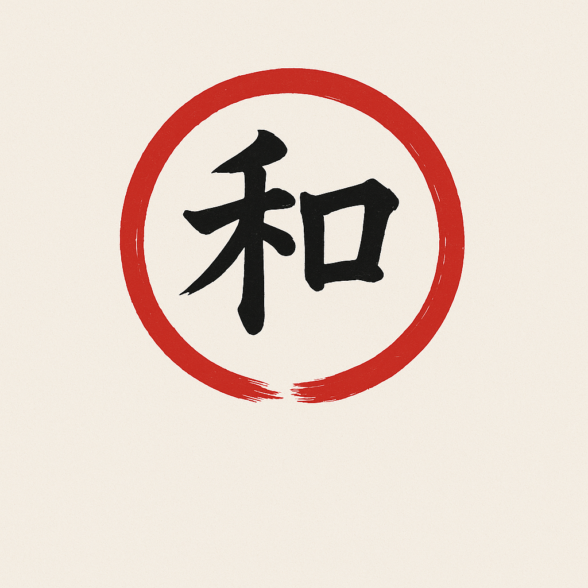
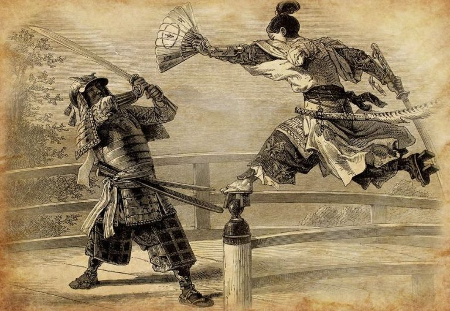
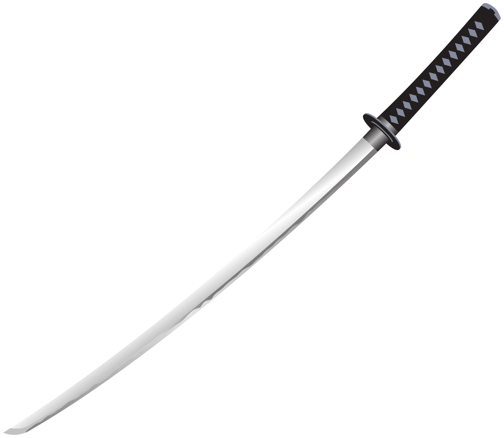
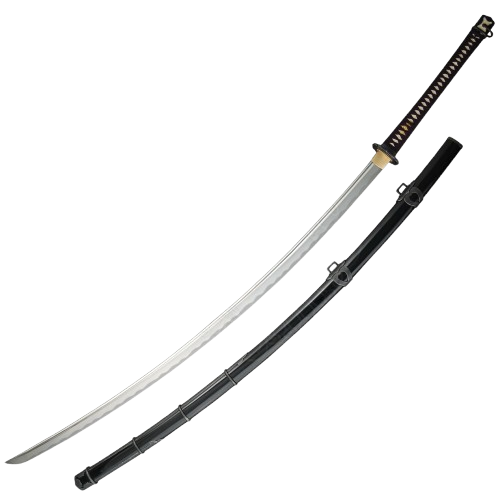
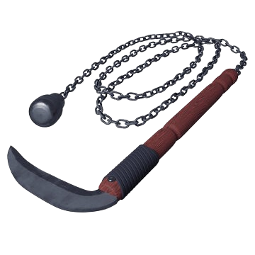

El Japón antiguo o antiguo Japón es lo que los historiadores entienden que se refiere a los periodos más primitivos de la historia japonesa. Dependiendo del punto de vista de estudio, este puede incluir o excluir el Paleolítico japonés acaecido durante la Edad de Piedra (100.000 a. C. - 10000 a. C.), así como los periodos Jomon (10000 a. C. - 300 a. C.) y Yayoi (900 a. C. - 300), que son nominados de acuerdo a lugares de las cercanías de Tokio de acuerdo a los hallazgos arqueológicos de cerámica que corresponden a dichos periodos. También incluye el periodo Kofun (250 - 238) que designa a los gigantescos túmulos de las tumbas reales de dicho periodo.
Alrededor del 10000 a. C. los habitantes del Japón desarrollaron la cultura jomon. Esta palabra del japonés traduce la «cuerda marcada» y se refiere a un estilo de diseño de la cerámica. La cerámica jomon fue la primera de ese tipo en el mundo. Los hombres de la cultura jomon eran cazadores, recolectores y pescadores y vivían en pequeñas tribus. Su cultura se extendió paulatinamente a todas las islas japonesas y después cultivarían también granos. La cultura jomon duraría hasta el 250 cuando fue desplazada abruptamente por la cultura yayoi originaria de Kyūshū.
En el Japón antiguo, las armas tradicionales reflejaban no solo la técnica de combate, sino también la filosofía y el honor de sus guerreros. La katana , famosa por su filo y elegancia, era el alma del samurái, usada en duelos y batallas con precisión ritual. La odachi , una espada de gran longitud, se empleaba en campo abierto por guerreros de gran fuerza, ideal para cortar desde la distancia. La kusarigama , una hoz unida a una cadena con un peso, era usada por ninjas y guerreros entrenados en técnicas de distracción y captura. Estas armas fueron protagonistas en épocas como Heian (794–1185), Kamakura (1185–1333) y Sengoku (1467–1600), marcadas por conflictos internos y guerras civiles. En batallas como Sekigahara (1600), que definió el inicio del shogunato Tokugawa, se enfrentaron ejércitos con tácticas complejas y armamento diverso. El uso de estas armas estaba guiado por el bushidō, el código del guerrero, que exaltaba la lealtad, el coraje y la disciplina. Más allá de su función bélica, cada arma representaba una conexión espiritual con el deber y la tradición. Hoy, estas armas siguen siendo estudiadas en artes marciales como el kenjutsu y el ninjutsu, preservando el legado de una cultura guerrera profundamente arraigada en la historia japonesa.



La katana es una espada tradicional japonesa, reconocida por su hoja curva de filo único y su profundo simbolismo cultural. Su origen se remonta al siglo IX, cuando los herreros japoneses comenzaron a diferenciar sus espadas de las chinas, incorporando una curvatura que mejoraba el corte desde la cadera. Durante el período Muromachi (1336–1573), la katana alcanzó su forma definitiva y se convirtió en el arma principal de los samuráis, quienes la consideraban una extensión de su alma.
La fabricación de una katana era un proceso sagrado, que combinaba técnicas de forjado con rituales espirituales. Se utilizaba acero Tamahagane, refinado mediante múltiples plegados para lograr una hoja resistente y flexible. Más que un arma, la katana representaba los valores del bushidō: honor, lealtad y disciplina. En épocas como Kamakura, Sengoku y Edo, la katana fue protagonista en batallas y duelos, y su portación era símbolo de estatus. Con la modernización de Japón en el siglo XIX, su uso militar disminuyó, pero su legado perdura en las artes marciales como el kenjutsu y el iaido. Hoy, la katana sigue siendo admirada como una obra de arte y un emblema de la tradición guerrera japonesa
La ōdachi (大太刀), que significa “gran espada”, es una de las armas más imponentes del Japón feudal. Para ser considerada una ōdachi, su hoja debía medir al menos 3 shaku (unos 90,9 cm), aunque muchas superaban los 130 cm, llegando incluso a los 225 cm como el famoso Odachi Masayoshi. Su tamaño la hacía difícil de portar y usar, por lo que se llevaba a la espalda o era transportada por asistentes antes del combate.
La ōdachi se desarrolló durante el período Kamakura (1185–1333) y alcanzó popularidad en la era Nanbokuchō (1336–1392), cuando los enfrentamientos en campo abierto favorecían armas de largo alcance. Su uso era más ceremonial que práctico: en batallas, se empleaba para romper formaciones enemigas o como símbolo de poder por parte de samuráis de alto rango. En tiempos de paz, la ōdachi se exhibía en templos como ofrenda a los dioses o en desfiles militares.
La forja de una ōdachi requería gran habilidad, ya que su tamaño dificultaba el temple uniforme de la hoja. Los herreros que lograban crear estas espadas eran altamente respetados. Con la llegada del período Edo (1603–1868), su uso militar decayó, y la katana se convirtió en el arma principal del samurái.
La kusarigama (鎖鎌) es una de las armas más singulares del Japón feudal, compuesta por una hoz (kama) unida a una cadena (kusari) con un peso metálico en el extremo. Esta combinación permitía ataques versátiles: el peso se lanzaba para desarmar o inmovilizar al enemigo, mientras la hoz se usaba para rematar en combate cercano. Su origen se remonta al período Muromachi (1336–1573), aunque su uso se popularizó en la era Edo (1603–1868), especialmente entre guerreros entrenados en técnicas no convencionales, como los ninja y algunos monjes guerreros.
La kusarigama requería gran destreza, coordinación y conocimiento del entorno. El luchador debía calcular la distancia, controlar el giro de la cadena y anticipar los movimientos del oponente. Por ello, su dominio era reservado a expertos en artes marciales como el kusarigamajutsu, disciplina que aún se practica en escuelas tradicionales.
Aunque no era común en batallas campales, la kusarigama era efectiva en espacios cerrados o como arma sorpresa. También se usaba en duelos o como herramienta de defensa personal. Su diseño permitía ocultarla fácilmente, lo que la convirtió en un símbolo de astucia y estrategia.